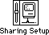
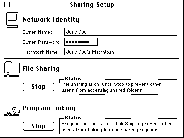
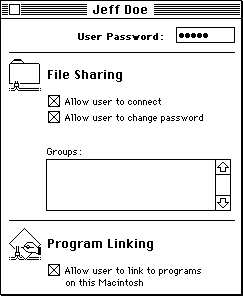
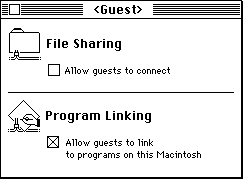
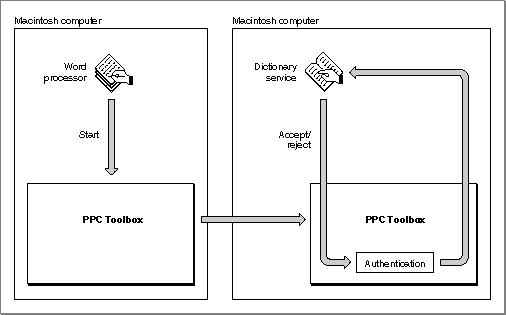

Setting Up Authenticated Sessions
Network communication must be active to initiate sessions with other computers across a network. The user must activate AppleTalk in the Chooser and enable program linking using the Sharing Setup control panel located in the Control Panels folder inside the System Folder. Figure 11-2 displays the icon for the Sharing Setup control panel.Figure 11-2 The icon for the Sharing Setup control panel

Figure 11-3 shows the Sharing Setup control panel.
Figure 11-3 The Sharing Setup control panel

To permit other computers to initiate sessions with the owner's computer, the owner of the computer must click the Start button underneath Program Linking (Start toggles with Stop). The Sharing Setup control panel then indicates "Program linking is on. Click Stop to prevent other users from linking to your shared programs." To prevent other computers from initiating sessions, an owner simply clicks Stop underneath Program Linking. The Sharing Setup control panel then indicates "Program linking is off. Click Start to allow other users to link to your shared programs." Clicking the Start or Stop button also enables or disables the transmission of incoming Apple events across the network.
If a user clicks the Stop button while there are active incoming sessions (sessions initiated by other users), an alert box (shown in Figure 11-4) appears on the user's screen.
Figure 11-4 The session termination alert box
If a user clicks OK, all active sessions initiated by other users are immediately terminated. Note that it is still possible for the owner of the computer to initiate sessions, even though other users may not initiate sessions with the owner's computer.
The PPC Toolbox establishes the identity of users through the process of authentication. The authentication mechanism of the PPC Toolbox identifies each user through an assigned name and password. Each session initiated with a port that is located on a remote computer requires authentication (unless guest access is enabled) before a session is permitted. Sessions between applications located on the same computer never require authentication.
A computer's owner can establish access for other users and guests by opening the Users & Groups control panel located in the Control Panels folder. The Users & Groups control panel allows an owner to specify the names and passwords of other users whose computers can initiate sessions with his or her ports across the network. When the computer's owner opens the Users & Groups control panel, the Guest icon appears. If the owner's name is specified in the Sharing Setup control panel, an icon with the owner's name also appears.
To specify a particular new user, the owner chooses New User from the File menu. The owner should type in the user's name. When the owner opens a user icon in the Users & Groups control panel, the Finder displays the users and groups dialog box on the owner's screen. Figure 11-5 shows the users and groups dialog box for a particular user.
Figure 11-5 The users and groups dialog box

To permit authenticated session requests, the owner can specify a password for each user. The owner allows other users to utilize the PPC Toolbox by clicking the checkbox under Program Linking. If the owner clicks the checkbox again, all active sessions initiated by this particular user are immediately terminated. The user termination alert box (shown in Figure 11-6) is displayed as a warning.
Figure 11-6 The user termination alert box
When the owner opens a Guest icon in the Users & Groups control panel, the Finder displays the guest dialog box on the owner's screen. Authentication is not required if the owner permits guest access. Figure 11-7 shows the guest dialog box.
Figure 11-7 The guest dialog box

By clicking the checkbox under Program Linking, the owner permits guests to communicate using the PPC Toolbox or Apple events.
Consider this example of the authentication process: one user decides to make a dictionary service available to other users. A second user wishes to employ this service in a word-processing program. Assuming both programs support the PPC Toolbox, the word-processing program attempts to gain access to the dictionary service that is open on the first user's computer by initiating a session. When the word-processing application requests a session, the PPC Toolbox attempts to authenticate the second user by requesting a user name and a password (unless guest access is enabled). If the authentication process verifies the user's identity and the dictionary application accepts the request for a session, a session is established and the second user can access the dictionary's data.
Figure 11-8 illustrates the authentication process that occurs when a user attempts to initiate a session.
Figure 11-8 The PPC Toolbox authentication process
